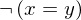

Theorem unfold_not_equals of type Forall¶
from the theory of proveit.logic.equality¶
see dependencies
In [1]:
import proveit
# Automation is not needed when only building an expression:
proveit.defaults.automation = False # This will speed things up.
proveit.defaults.inline_pngs = False # Makes files smaller.
%load_theorem_expr # Load the stored theorem expression as 'stored_expr'
# import the special expression
from proveit.logic.equality import unfold_not_equals
In [2]:
# check that the built expression is the same as the stored expression
assert unfold_not_equals.expr == stored_expr
assert unfold_not_equals.expr._style_id == stored_expr._style_id
print("Passed sanity check: unfold_not_equals matches stored_expr")
In [3]:
# Show the LaTeX representation of the expression for convenience if you need it.
print(unfold_not_equals.latex())
In [4]:
unfold_not_equals.style_options()
Out[4]:
In [5]:
# display the expression information
unfold_not_equals.expr_info()
Out[5]:
| core type | sub-expressions | expression | |
|---|---|---|---|
| 0 | Operation | operator: 1 operand: 3 |  |
| 1 | Literal |  | |
| 2 | ExprTuple | 3 | |
| 3 | Lambda | parameters: 12 body: 4 | |
| 4 | Conditional | value: 5 condition: 6 | |
| 5 | Operation | operator: 7 operand: 10 |  |
| 6 | Operation | operator: 9 operands: 12 |  |
| 7 | Literal | ||
| 8 | ExprTuple | 10 | |
| 9 | Literal |  | |
| 10 | Operation | operator: 11 operands: 12 |  |
| 11 | Literal |  | |
| 12 | ExprTuple | 13, 14 |  |
| 13 | Variable |  | |
| 14 | Variable |  |